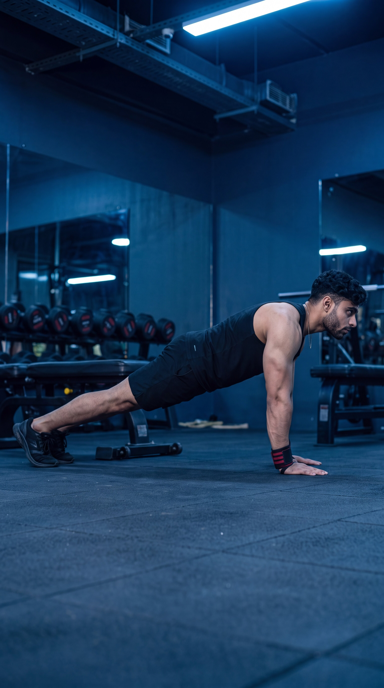

Primary Muscle
Chest
Build Upper-Body Strength, Develop Your Chest & Master Fundamental Bodyweight Control
The Push-Up is a fundamental bodyweight exercise that primarily targets the chest while also engaging the triceps, shoulders, and core. With no equipment required, it helps develop upper-body strength, muscular endurance, movement control, and total-body stability through a controlled pressing motion.

Chest
Bodyweight
Beginner
Compound
Understand which muscles do most of the work during the Push-Up and which supporting muscles help press, stabilize, and control your body throughout each repetition.
Chest
Back of Upper Arm
Front Shoulder
Shoulder-Girdle Stabilizer
Discover how the Push-Up helps build upper-body strength, develop the chest, improve core stability, increase muscular endurance, and provide effective training without equipment.
Strengthens the chest, triceps, and front shoulders through a coordinated pressing movement, helping develop practical upper-body strength using your own bodyweight as resistance.
Places significant demand on the pectoralis major as you lower and press your body away from the floor, making the Push-Up an effective bodyweight exercise for chest development.
Requires continuous engagement of the abdominal muscles, obliques, glutes, and surrounding stabilizers to maintain a strong, straight body position throughout every repetition.
Can be performed almost anywhere using only your bodyweight and a stable surface, making it a practical exercise for home workouts, gym sessions, travel, and outdoor training.
Can be modified with incline variations for beginners or progressed with more challenging variations as strength improves, making it suitable for a wide range of training levels.
Repeated controlled repetitions challenge the chest, triceps, shoulders, and core to sustain effort over time, helping improve upper-body muscular endurance and overall work capacity.
Follow these step-by-step instructions to perform the Push-Up with proper body alignment, controlled technique, and effective chest engagement.
Begin in a high plank position with your hands placed slightly wider than shoulder-width apart. Spread your fingers naturally and keep your hands firmly planted on a stable surface.
Position your hands around chest level rather than too far forward near your head. This helps create a stronger and more comfortable pressing position.
Extend your legs behind you and support your lower body on your toes. Keep your head, shoulders, hips, knees, and heels aligned in one strong, straight line while bracing your core and glutes.
Avoid allowing your hips to sag toward the floor or rise excessively. Maintain the same rigid body position throughout the entire repetition.
Bend your elbows and slowly lower your entire body toward the floor as one controlled unit. Keep your elbows angled naturally away from your torso rather than flaring them directly out to the sides.
Aim to keep your elbows at roughly 30 to 45 degrees from your torso. Avoid forcing an exact angle if a slightly different position feels more natural for your individual structure.
Continue lowering until your chest approaches the floor or until you reach the deepest comfortable range of motion you can control without losing your straight body alignment.
Prioritize controlled depth over forcing your chest to touch the floor. Use the deepest range you can perform comfortably while maintaining stable shoulders and proper body position.
Press firmly through your hands and extend your elbows to raise your body back toward the starting position. Keep your core braced and move your body upward as one controlled unit.
Do not let your chest rise before your hips or allow your lower back to collapse. Maintain consistent full-body tension from the first repetition to the last.
Avoid these common technique errors to improve chest engagement, maintain better body alignment, and perform the Push-Up more effectively.
Allowing your hips to drop toward the floor breaks proper body alignment, reduces core stability, and can place unnecessary stress on the lower back.
Brace your core, tighten your glutes, and maintain one straight line from your head through your shoulders, hips, knees, and heels throughout every repetition.
Allowing your elbows to point directly out to the sides can create a less efficient pressing position and may increase unnecessary stress on the shoulders.
Keep your elbows angled naturally away from your torso, typically around 30 to 45 degrees, while maintaining a comfortable and controlled pressing path.
Performing only shallow repetitions can limit the movement range and reduce the challenge placed on the chest, triceps, and shoulders.
Lower your chest toward the floor through the deepest comfortable range you can control, then press back up while maintaining proper full-body alignment.
Looking excessively forward or allowing your head to drop can disrupt neutral spinal alignment and create unnecessary tension through the neck.
Keep your neck neutral and aligned with your spine. Direct your gaze naturally toward the floor slightly ahead of your hands without forcing your head upward or downward.
Apply these practical coaching cues to improve your Push-Up technique, maintain better full-body alignment, and perform each repetition with greater control and consistency.
Place your hands slightly wider than shoulder-width apart and around chest level to create a stable base for an effective and controlled pressing movement.
Avoid placing your hands too far forward near your head. A stable hand position helps you maintain a stronger pressing path and comfortable shoulder mechanics.
Brace your core and tighten your glutes before lowering your body. Maintain one strong line from your head through your shoulders, hips, knees, and heels.
Your chest and hips should rise and lower together as one controlled unit. Do not let your lower back sag or allow your hips to rise ahead of your chest.
Allow your elbows to travel naturally away from your torso as you lower, typically around 30 to 45 degrees, rather than flaring them directly out to the sides.
Do not force every person into one exact elbow angle. Use a comfortable pressing path that allows you to maintain control and stable shoulder positioning.
Increase repetitions or move to a harder Push-Up variation only when you can maintain proper body alignment, controlled depth, and consistent technique.
If standard Push-Ups are too difficult, begin with an incline variation. If they become too easy, progress gradually to more challenging variations rather than rushing through poor-quality repetitions.
Progress from beginner-friendly incline Push-Ups to controlled standard repetitions and more challenging variations while maintaining proper body alignment, consistent technique, and effective upper-body strength development.
Start with your hands elevated on a stable bench, bar, or other secure surface to reduce the amount of bodyweight you must press while learning proper hand placement and full-body alignment.
Stable hand placement, straight body alignment, braced core, controlled elbow path, and a comfortable range of motion.
Progress to the floor and perform standard Push-Ups while maintaining a straight body position, controlled lowering phase, stable shoulders, and consistent pressing mechanics throughout every repetition.
Full-body tension, controlled depth, natural elbow positioning, neutral neck alignment, and smooth repetitions without losing posture.
Gradually increase the number of controlled Push-Ups you can perform while preserving the same body alignment, movement depth, elbow path, and technique developed during the earlier stages.
Quality repetitions, gradual volume increases, consistent range of motion, controlled tempo, and maintaining technique as fatigue develops.
Once you can perform standard Push-Ups with reliable technique and control, introduce more challenging variations such as decline, diamond, tempo, or weighted Push-Ups according to your training goals.
Gradual progression, appropriate exercise selection, controlled technique, full-body stability, and choosing variations that match your strength and training goals.
Find clear answers to common questions about Push-Up technique, muscles worked, hand placement, elbow position, range of motion, training volume, and exercise progression.
Push-Ups primarily target the pectoralis major of the chest while also involving the triceps brachii and anterior deltoids. The serratus anterior, abdominal muscles, glutes, and other stabilizers help maintain proper body alignment throughout the movement.
For a standard Push-Up, place your hands approximately shoulder-width to slightly wider than shoulder-width apart and around chest level. The exact position may vary slightly depending on your individual anatomy, mobility, and comfort.
Lower your body until your chest approaches the floor or until you reach the deepest comfortable range of motion you can control while maintaining stable shoulders, a braced core, and straight body alignment. Avoid forcing additional depth if your technique begins to break down.
Your elbows do not need to stay tightly pressed against your torso, but they should generally avoid flaring directly out to the sides. A natural angle of roughly 30 to 45 degrees from the torso works well for many people, although the exact position can vary with individual anatomy and hand placement.
Yes. Push-Ups can be adapted for beginners by elevating the hands on a stable bench, bar, or other secure surface. As strength and control improve, gradually lower the height of the surface before progressing to standard floor Push-Ups.
The appropriate number of sets and repetitions depends on your strength, experience, goals, recovery, and overall training program. A common starting point is approximately 2–4 working sets of controlled repetitions while stopping before technique significantly breaks down. If standard Push-Ups become too easy, progress to a more challenging variation rather than relying only on increasingly high repetition counts.
Explore other chest exercises that complement the Push-Up and help you develop chest strength, pressing power, muscle control, and balanced upper-body development through different movement patterns and resistance methods.
Continue building your chest strength and training knowledge with step-by-step exercise guides covering proper technique, muscles worked, common mistakes, coaching tips, and progression strategies.